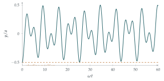

STEP III 2014, Question 10
Read the question before you go on. It is in the STEP Support Programme’s question database: step.maths.org/questions/14-s3-q10
The hook
One mass on a spring bounces up and down in a simple, regular way. Join two masses with springs and the motion looks complicated: each mass jerks about irregularly, energy sloshing from one to the other. But hidden inside the complication are two perfectly simple motions, the normal modes, in which the masses move together or exactly opposite, each mode oscillating at its own frequency. Every motion of the system is a combination of the two.
This question finds the normal modes of two masses between three springs, and then proves something striking: started from rest with one mass displaced, the system never returns to its starting position. The reason is that the ratio of the two frequencies is \(\sqrt3\), and \(\sqrt3\) is irrational.
Before you start
With \(X\) at distance \(a + x\) from \(P\) and \(Y\) at distance \(a + y\) from \(Q\), how long is the middle spring \(XY\)? Which springs are stretched and which compressed when \(x\) and \(y\) are positive?
The three lengths add up to \(3a\), so \(XY = 3a - (a + x) - (a + y) = a - x - y\). When \(x, y > 0\), the outer springs are stretched (by \(x\) and \(y\)) and the middle one is compressed (by \(x + y\)).
Working it through
Stage 1 The equations of motion
Measure \(x\) in the direction from \(P\) towards \(Q\). The spring \(PX\) has extension \(x\), so its tension \(\frac{\lambda x}{a}\) pulls \(X\) back towards \(P\). The spring \(XY\) has extension \(-(x + y)\), so its tension \(-\frac{\lambda(x + y)}{a}\) pulls \(X\) towards \(Y\) (a negative tension is a push). So \[m\ddot x = -\frac{\lambda x}{a} - \frac{\lambda(x + y)}{a} = -\frac{\lambda}{a}(2x + y). \qed\] By symmetry (swap the roles of \(X\) and \(Y\), \(P\) and \(Q\)), \[m\ddot y = -\frac{\lambda}{a}(2y + x).\]
Stage 2 Decoupling
Each equation involves both \(x\) and \(y\). Which combinations of the two equations involve only one combination of \(x\) and \(y\)?
Subtracting and adding, \[m(\ddot x - \ddot y) = -\frac{\lambda}{a}(x - y), \qquad m(\ddot x + \ddot y) = -\frac{3\lambda}{a}(x + y).\] Each is the equation of simple harmonic motion: \(x - y\) oscillates with \(\omega^2 = \frac{\lambda}{ma}\), and \(x + y\) with \(3\omega^2\).
Stage 3 The initial conditions
Initially \(XP = a\) and \(YQ = \frac12a\), so \(x = 0\) and \(y = -\frac12a\), and both particles are at rest. So \(x - y = \frac12a\) and \(x + y = -\frac12a\) at \(t = 0\), with zero rates of change, giving \[x - y = \tfrac12a\cos\omega t, \qquad x + y = -\tfrac12a\cos\sqrt3\,\omega t.\] So \(A = \frac12a\) and \(B = 0\).■
Stage 4 Never returning
Write \(y\) in terms of \(t\). For \(Y\) to be back at its initial position, \(y = -\frac12a\). What must both cosines be?
Subtracting, \(y = \frac12\bigl((x + y) - (x - y)\bigr) = -\frac14a\bigl(\cos\sqrt3\,\omega t + \cos\omega t\bigr)\). For \(y = -\frac12a\) we need \(\cos\sqrt3\,\omega t + \cos\omega t = 2\), and since each cosine is at most \(1\), both must equal \(1\): \[\omega t = 2\pi k, \qquad \sqrt3\,\omega t = 2\pi j\] for integers \(k\) and \(j\). For \(t > 0\), \(k \geq 1\), and dividing, \(\sqrt3 = \frac jk\), which is impossible because \(\sqrt3\) is irrational. So \(Y\) never returns to its initial position.■

Looking back
Find the combinations that decouple. \(x - y\) and \(x + y\) each satisfied an equation of their own.
Symmetry suggests them. The system is symmetric under swapping the two sides, so symmetric and antisymmetric combinations are natural.
Irrationality has physical consequences. The motion is not periodic because a frequency ratio is irrational.
What’s really going on
Normal modes are eigenvectors
Write the equations as a matrix equation: \[m\begin{pmatrix}\ddot x \\ \ddot y\end{pmatrix} = -\frac{\lambda}{a}\begin{pmatrix}2 & 1 \\ 1 & 2\end{pmatrix}\begin{pmatrix}x \\ y\end{pmatrix}.\] The combinations that decouple are the eigenvectors of the matrix: \((1, -1)\) with eigenvalue \(1\), and \((1, 1)\) with eigenvalue \(3\) (Section 7.2). In the first mode, \(x = -y\): both particles move the same way along the line (remember that \(x\) and \(y\) are measured from opposite ends), and the middle spring keeps its length. In the second, \(x = y\): they move in opposite directions, squeezing and stretching the middle spring, which makes the frequency higher. The squares of the frequencies are the eigenvalues, multiplied by \(\frac{\lambda}{ma}\).
This works for any number of masses and springs. A system of \(N\) coupled oscillators has \(N\) normal modes, given by the eigenvectors of a symmetric matrix, and the spectral theorem guarantees that they always exist and are perpendicular. Molecules vibrate in normal modes, which is how chemists identify them by the infrared light they absorb. Buildings and bridges have normal modes, which engineers must keep away from the frequencies of wind and earthquakes. And as the number of masses tends to infinity, the normal modes become the harmonics of a vibrating string, the starting point of Fourier analysis.
Coming close without arriving
Although \(Y\) never returns exactly, it comes as close as you like. The reason is a theorem of Kronecker: if \(\alpha\) is irrational, the multiples \(\alpha, 2\alpha, 3\alpha, \ldots\), taken modulo \(1\), come arbitrarily close to every number in \([0, 1]\). So we can find times when \(\omega t\) is a multiple of \(2\pi\) and \(\sqrt3\,\omega t\) is within any tolerance of one. The motion is quasi-periodic: it winds round a torus (one angle for each mode) without ever closing up. The same distinction, between rational and irrational frequency ratios, is at the heart of the KAM theorem on the stability of the solar system.
The thinking skill
When equations are coupled, look for combinations of the variables that evolve independently. In linear problems, these are the eigenvectors.
This is the same idea as the centre of mass and relative coordinates of Section 10.6. At university it becomes diagonalisation: choose a basis in which the matrix is diagonal, and a system of coupled equations falls apart into independent ones.
Try this next
Energy. Show that the total energy \(\frac12m(\dot x^2 + \dot y^2) + \frac{\lambda}{2a}\bigl(x^2 + y^2 + (x + y)^2\bigr)\) is constant, and that it splits into a sum of two terms, one for each normal mode, each of which is separately constant.
Pure modes. How should the particles be started so that the motion is periodic, with period \(\frac{2\pi}{\omega}\)? With period \(\frac{2\pi}{\sqrt3\,\omega}\)?
A stiffer middle spring. If the middle spring has modulus \(\mu\) instead of \(\lambda\), find the two normal-mode frequencies. For which values of \(\mu/\lambda\) is every motion periodic?
Three masses. Three equal masses are connected in a line by four identical springs between two fixed points. Find the matrix and its eigenvalues (\(2 - \sqrt2\), \(2\), \(2 + \sqrt2\)), and describe the three normal modes.
Further reading
A. P. French, Vibrations and Waves (MIT Introductory Physics Series), Chapter 5, on coupled oscillators and normal modes.
Gilbert Strang, Introduction to Linear Algebra (Wellesley-Cambridge), the chapter on eigenvalues, which includes springs and masses as a main example.
Steven Strogatz, Nonlinear Dynamics and Chaos (CRC Press), Chapter 8, on quasi-periodic motion on a torus.